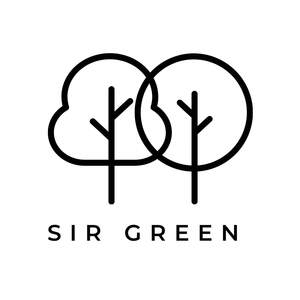

Trade Mark Journal No.2026/009 27 February 2026
UK00004339506 11 February 2026 (20,21,24,37,44)

- Class 20
- Wooden furniture; Wooden shelving [furniture]; Wooden racks [furniture]; Decorative wooden panels [furniture]; Furniture; Bamboo furniture; Slatted furniture; Furniture of metal; Metal furniture; Garden furniture manufactured from wood; Trestles [furniture]; Furniture and furnishings; Miniature furniture made of wood; Furniture made from wood; Upholstered furniture; Leather furniture; Cane furniture; Benches [furniture]; Glass furniture; Antique style furniture; Furniture cabinets; Cabinets [furniture]; Prefabricated shelves [furniture]; Pouffes [furniture]; Garden furniture made of metal; Cushions [furniture]; Miniature furniture made of wood fibre; Woven timber blinds [furniture]; Wooden blinds; Wooden boxes; Furniture made of rattan; Furniture frames; Domestic furniture made of wood; Trolleys [furniture]; Credenzas [furniture]; Doors for furniture; Desks [furniture]; Wooden bins; Garden furniture; Furniture chests; Kitchen dressers [furniture]; Wooden ladders; Outdoor furniture; Furniture shelves; Shelves [furniture]; Lawn furniture; Seating furniture.
- Class 21
- Ceramic ornaments; Ceramic figurines; Figurines [statuettes] of porcelain, ceramic, earthenware or glass; Figurines of porcelain, ceramic, earthenware, terra-cotta or glass; Statuettes of porcelain, ceramic, earthenware or glass; Ornaments made of ceramics; Ornaments made of porcelain; Statues of porcelain, ceramic, earthenware or glass; Statues of porcelain, earthenware, ceramic or glass; Statues of porcelain, ceramic, earthenware, terra-cotta or glass; Ornaments [statues] made of porcelain; Commemorative statuary cups of porcelain, ceramic, earthenware, terra-cotta or glass; Decorative objects [ornaments] made of glass; Figurines made of ceramic; Busts of porcelain, ceramic, earthenware, terra-cotta or glass; Ceramic mugs; Works of art of porcelain, ceramic, earthenware, terra-cotta or glass; Ornamental figurines made of porcelain; Works of art of porcelain, ceramic, earthenware or glass; Decorative porcelain ware; Figurines made of decorative glass; Wall decorations of porcelain; Ornamental sculptures made of porcelain; Ornamental figurines made of glass; Mugs made of ceramic materials; Figurines of earthenware; Ornamental sculptures made of china; Ornamental models made of porcelain.
- Class 24
- Household textiles; Household textile goods; Household textile articles; Household linens; Household linen; Textiles for furnishings; Furnishing fabrics being textile piece goods; Towels of textiles; Textile tablecloths.
- Class 37
- Hardscaping services; Masonry services; Construction services; Plastering contractor services; Grouting services; Tiling services; Painting contractor services; Construction information services; Building consultancy services; Construction management services; Construction advisory services; Wallpapering services; Consultancy services relating to the repair of buildings.
- Class 44
- Gardening services; Gardener and gardening services; Landscape gardening services; Plant care services [horticultural services]; Garden design services; Landscaping [gardening]; Arboricultural services; Lawn care services; Lawn maintenance services; Lawn mowing services.
Sir Green LTD